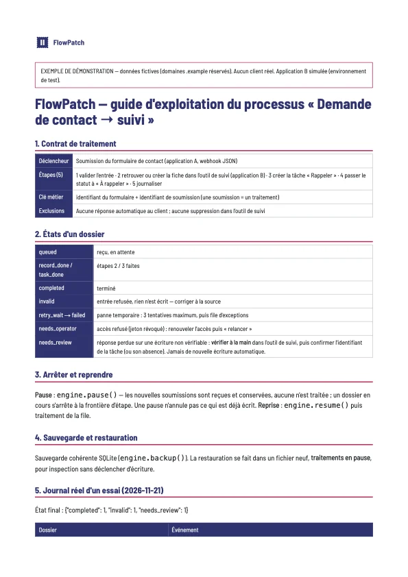

Cinq services précis, une même exigence : des résultats que vous pouvez vérifier.
Chaque service a son offre, ses prix publiés et un exemple complet à télécharger. Une personne relit chaque livrable ; les faits, montants et fichiers sont contrôlés par des scripts, pas par l’IA.
 Sachez qui contacter, et pourquoi — preuve à l’appui.Recherche commerciale qualifiée. Pilote dès 290 USD.Voir le service et son exemple
Sachez qui contacter, et pourquoi — preuve à l’appui.Recherche commerciale qualifiée. Pilote dès 290 USD.Voir le service et son exemple
 Un catalogue bilingue fidèle à vos produits.Catalogues e-commerce FR/EN. Pilote dès 180 USD.Voir le service et son exemple
Un catalogue bilingue fidèle à vos produits.Catalogues e-commerce FR/EN. Pilote dès 180 USD.Voir le service et son exemple
 Une automatisation que vous pouvez suivre, arrêter et reprendre.Automatisations administratives fiables. Diagnostic + prototype dès 350 USD.Voir le service et son exemple
Une automatisation que vous pouvez suivre, arrêter et reprendre.Automatisations administratives fiables. Diagnostic + prototype dès 350 USD.Voir le service et son exemple
 Une candidature fidèle à votre parcours, que vous pouvez défendre.Dossiers de candidature FR/EN. Dossier dès 340 USD.Voir le service et son exemple
Une candidature fidèle à votre parcours, que vous pouvez défendre.Dossiers de candidature FR/EN. Dossier dès 340 USD.Voir le service et son exemple
- Les marchés publics faits pour vous, avant la date limite.Marchés publics : veille et réponse. Veille 30 jours dès 190 USD.Voir le service et son exemple

10 secondes
Quel service pour votre besoin ?
La règle de la maison
- Un exemple complet, ouvrable et téléchargeable, pour chaque service.
- Des prix publiés et des limites écrites avant toute commande.
- Les faits, nombres et fichiers contrôlés par des scripts déterministes.
- Une personne relit chaque livrable avant remise ; 14 jours de retours.
IA et relecture humaine
Des modèles d’IA servent à préparer des brouillons. Chaque élément livré est vérifié par une personne, et les contrôles de faits, de montants et de fichiers sont faits par des scripts déterministes — pas par l’IA. Les données de votre dossier ne sont pas envoyées à un service d’IA tiers.
Fenêtre de retours de 14 jours après remise. Accusé de réception sous 2 jours ouvrés (UTC). Une erreur de notre part est corrigée sans frais ; un changement de cible ou une nouvelle demande fait l’objet d’un devis.
Guides pratiques
- Comment choisir un prestataire B2B fiableLes critères pour choisir un prestataire B2B : exemples concrets, prix publiés, limites écrites, méthode de contrôle, conditions de correction et de remboursement.
- Prestation au prix fixe ou en régie : que choisirPrix fixe ou facturation au temps passé (régie) : avantages, risques et cas d’usage de chaque modèle pour une petite entreprise qui achète une prestation.
- IA et relecture humaine : pourquoi les deuxCe que l’IA générative fait bien dans une prestation, ce qu’elle fait mal, et pourquoi une relecture humaine et des contrôles automatiques restent nécessaires.
- Rédiger un bon brief pour un prestataireLes rubriques d’un brief clair pour une prestation : objectif, contexte, livrable attendu, contraintes, exemples, critères de réussite et calendrier.
- Comment vérifier un livrable avant de l’accepterMéthode pour vérifier un livrable de prestation avant de l’accepter : relire contre le brief, contrôler un échantillon, vérifier les sources et signaler les écarts.
- Quelles tâches une PME peut-elle externaliser ?Recherche commerciale, traduction, automatisation, rédaction : quelles tâches une petite entreprise peut externaliser utilement, et lesquelles garder en interne.
Questions fréquentes
Qu’est-ce qu’ATLAS Studio ?
Un studio qui vend cinq services B2B à prix fixes : SignalDesk (recherche commerciale sourcée), Localoom (catalogues e-commerce français-anglais), FlowPatch (automatisations administratives) CareerLift (CV et candidatures bilingues) et Soumissio (marchés publics). Chaque service a sa page, ses prix et un exemple complet.
Comment sont fixés les prix ?
Ils sont publiés en dollars américains sur chaque page de service. Les formules à prix fixe reçoivent un devis automatique au prix affiché ; les autres sont chiffrées après lecture du brief. Le paiement par carte (Stripe) n’intervient qu’après acceptation du devis.
L’IA fait-elle le travail ?
Des modèles d’IA préparent des brouillons, mais rien n’est livré sans relecture humaine. Les faits, les nombres et les fichiers sont contrôlés par des scripts déterministes : un chiffre absent des données du client est refusé.
Où sont traitées mes données ?
La base de données et les fichiers sont hébergés par Supabase dans la région de Paris. Les brouillons sont préparés sur des machines Kaggle dans un espace privé, effacé à la fin de chaque session. Le détail figure dans la politique de confidentialité.
Que se passe-t-il si le résultat ne convient pas ?
Chaque livraison ouvre une fenêtre de retours de 14 jours. Si un brief sort du cadre d’une formule, nous vous écrivons avant tout travail et remboursons intégralement.